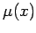
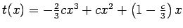
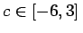
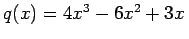
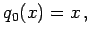
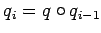
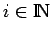

Inhalt Index DeskTop Bronstein

 Algebra und Diskrete Mathematik Fuzzy-Logik Grundlagen der Fuzzy-Logik Zugehörigkeitsfunktionen
Algebra und Diskrete Mathematik Fuzzy-Logik Grundlagen der Fuzzy-Logik Zugehörigkeitsfunktionen


In Analogie zu den trapezförmigen Zugehörigkeitsfunktionen, die sich durch einen diskontinuierlichen Verlauf auszeichnen, finden auch glockenförmige Zugehörigkeitsfunktionen mit kontinuierlichem Kurvenverlauf Anwendung.
Resümee: Als Resümee der zu betrachtenden Beispiele ergibt sich, daß unscharfe und unpräzise Informationen durch Fuzzy-Mengen beschrieben und durch Zugehörigkeitsfunktionen  visualisiert werden können. Sprachliche Aussagen wie WENN-DANN-Regeln werden dann zu Berechnungsverfahren.
| Beispiel A |
|
Eine Klasse glockenförmiger, differenzierbarer Zugehörigkeitsfunktionen erhält man mit Hilfe von Funktionen f(x) der Art wenn p(x) geeignet wählt wird. |
Asymmetrische Zugehörigkeitsfunktionen in [0,1], wie sie die folgende Abbildung zeigt, erhält man beispielsweise für p(x)=x(1-x)(2-x) oder p(x)=x(1-x)(x+1) mit geeigneten Normierungsfaktoren. Der Faktor (2-x) im ersten Polynom bewirkt eine Verschiebung des Maximums nach links und liefert eine asymmetrische Kurvenform. Entsprechend bewirkt der Faktor (x+1) im zweiten Polynom eine Verschiebung nach rechts mit asymmetrischer Form.
| Beispiel B |
|
Beispiele für eine noch flexiblere Klasse von Zugehörigkeitsfunktionen erhält man durch eine Transformation t in [a,b] gemäß wobei für f die bereits bei den glockenförmigen Zugehörigkeitsfunktionen benutzte Funktion (5.358), d.h. (5.358) mit p(x) =(x-a)(b-x) verwendet werden kann. Ist t eine glatte Transformation in [a,b], d.h. ist t unendlich differenzierbar im Intervall Das nächst einfache Polynom mit den angegebenen Eigenschaften ist  mit einer Konstanten . Mit der Wahl c=-6 für maximale Krümmung des Polynoms ergibt sich . Wählt man für q0 die Identitätsfunktion, d.h.  so kann man zusammen mit q rekursiv durch  für  weitere Polynome berechnen. Setzt man für die Transformation t in Ft(x) (5.359) die entsprechenden Transformationspolynome ein, so erhält man eine Folge glatter Funktionen Fq0,Fq1 und Fq2 (linke Abbildung), die zur Konstruktion von Zugehörigkeitsfunktionen |